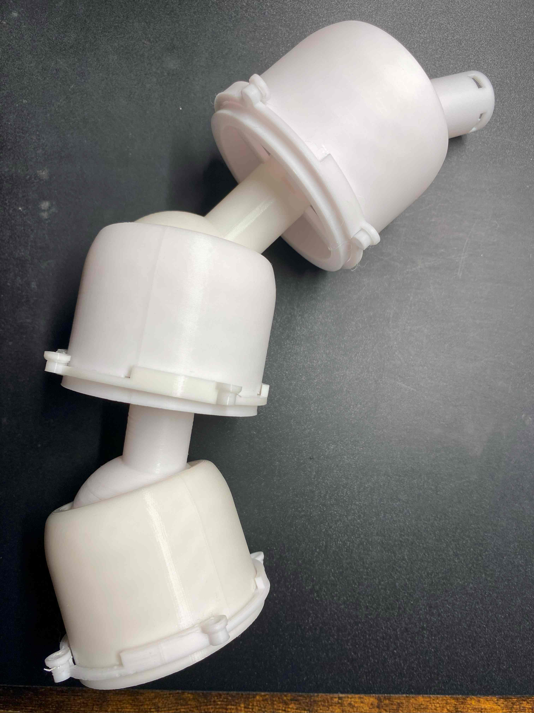
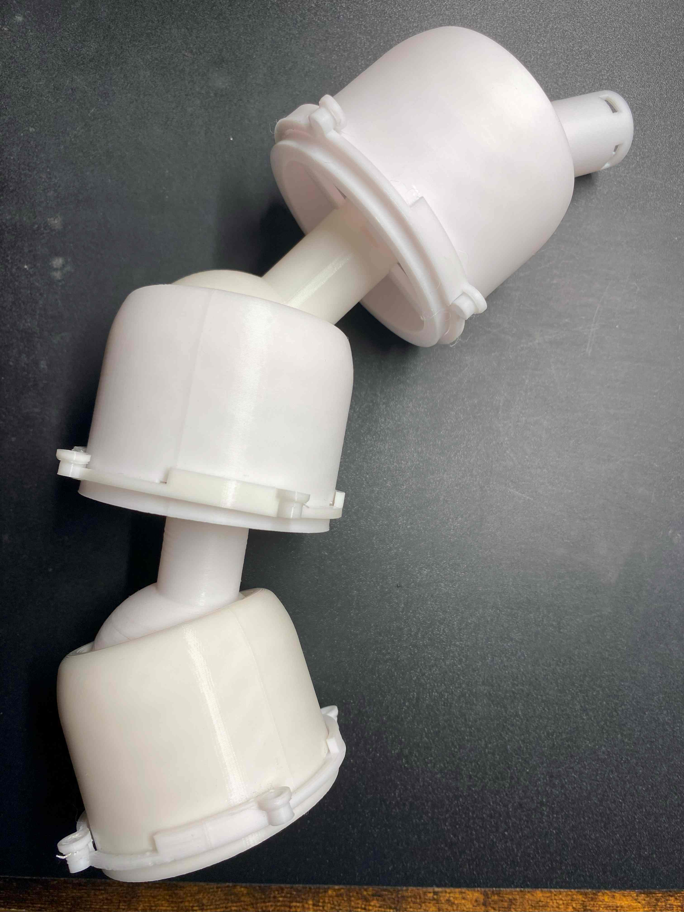

１．進捗と問題
関節制作の進捗：歯車の完成・全体の再設計
過程で出てきた問題：全体が長くなりすぎ
今後の課題：新しい関節部分の印刷・稼働テスト
過程で出てきた問題：全体が長くなりすぎ
今後の課題：新しい関節部分の印刷・稼働テスト
２．問題について
前回設計していた駆動部分の印刷を開始した
歯車部分の動作確認はおおむね完了・好調である

出てきた問題の中で前々から予想していたものが出てきた
駆動部分と関節部分を合わせると、一部分が長くなりすぎる問題である
この問題は見栄えが悪い（最重要）上に、巻き取り時の長さ管理が非常に困難になる
ただ、この問題を解決するには関節部との兼ね合いもあるため、製作物全体の再設計を強いられた
結論から言えば全体の再設計は一応完了し、問題もおそらく解決させることができる（はず）
実際にどうなるかは作ってみなければわからないが、何とかなりそうではある
ただし悲しいことに全体の再設計をしてしまったので前まで作っていた関節部がほぼ使えなくなってしまった
全体像を想像するのや動きの把握に非常に役にたったが、本当に悲しい
歯車部分の動作確認はおおむね完了・好調である

出てきた問題の中で前々から予想していたものが出てきた
駆動部分と関節部分を合わせると、一部分が長くなりすぎる問題である
この問題は見栄えが悪い（最重要）上に、巻き取り時の長さ管理が非常に困難になる
ただ、この問題を解決するには関節部との兼ね合いもあるため、製作物全体の再設計を強いられた
結論から言えば全体の再設計は一応完了し、問題もおそらく解決させることができる（はず）
実際にどうなるかは作ってみなければわからないが、何とかなりそうではある
ただし悲しいことに全体の再設計をしてしまったので前まで作っていた関節部がほぼ使えなくなってしまった
全体像を想像するのや動きの把握に非常に役にたったが、本当に悲しい
３．総評
今までの関節設計が使えなくなったものの一応順調に設計していけているといえる
今後の予想される課題一覧：
強度が今後足りるのか・ひもの引っ張りを利用した構造はうまくいくのか⇒強度面での不安がわずかにアリ
曲げるときにかくつかないか・動作の精密性は良好か⇒やすり等で球があるほうの関節を滑らかにすればOKかも
音声認識はつけたとしてどうするのか・水平装置はどうするか⇒ソフトウェアとの兼ね合いもある
現状から考えて置ける課題:
細かな動きをするために先のほうの構造をどうするのか⇒おもに現在できている部分の縮小版で行けそう
完成像の認識:
何をできるようにするのか＝ものを持てる・取れる・体を支えられる（60～70％くらいのイメージ像）
強度が今後足りるのか・ひもの引っ張りを利用した構造はうまくいくのか⇒強度面での不安がわずかにアリ
曲げるときにかくつかないか・動作の精密性は良好か⇒やすり等で球があるほうの関節を滑らかにすればOKかも
音声認識はつけたとしてどうするのか・水平装置はどうするか⇒ソフトウェアとの兼ね合いもある
現状から考えて置ける課題:
細かな動きをするために先のほうの構造をどうするのか⇒おもに現在できている部分の縮小版で行けそう
完成像の認識:
何をできるようにするのか＝ものを持てる・取れる・体を支えられる（60～70％くらいのイメージ像）